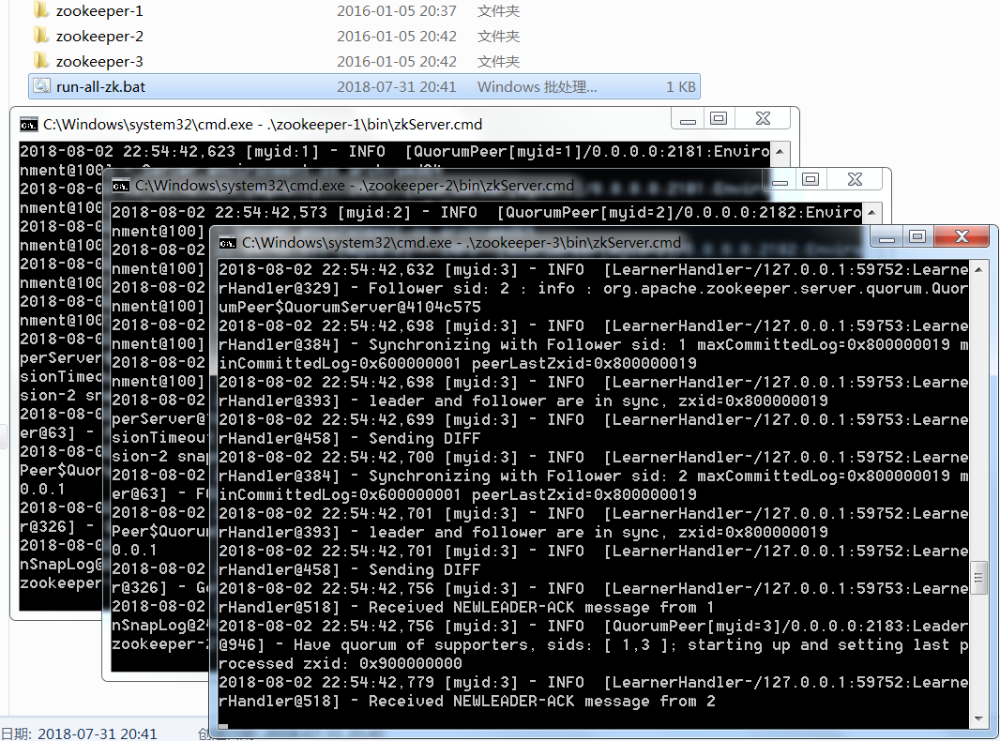
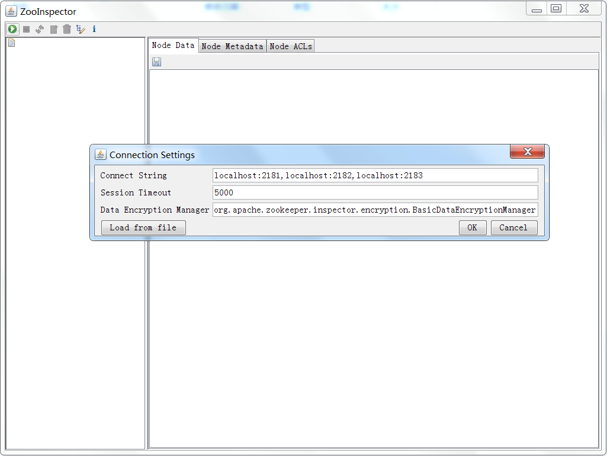
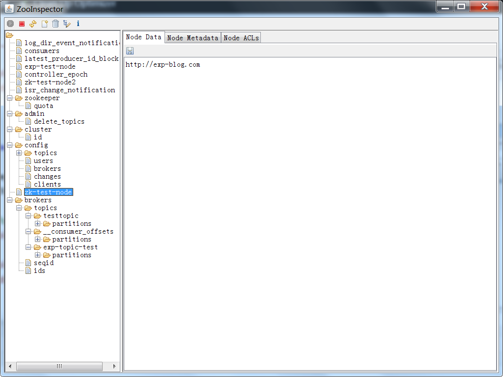

1. 前言
本文不讲zookeeper集群原理，只谈部署步骤。
默认读者已对zookeeper有最基本的认知，纯粹作为部署笔记，方便回忆。
另外本文是基于Windows部署的，Linux的步骤是基本相同的（只是启动脚本位置不同）。
严格来说本文部署的是单机伪集群，但一理通百理明，多主机集群和单机伪集群的部署方式相差无几，从入门角度看，使用方式也是大同小异。
2. 环境
- JDK ： 1.8
- zookeeper ： 3.4.7
- zookeeper集群规模 ： 3
- zookeeper安装目录 ：%INSTALL_DIR% = E:\apache\apache-zookeeper（此处定义变量是为了下文方便说明，实际部署时应使用实际路径而非变量）
3. 安装
到zookeeper官网下载最新版：https://zookeeper.apache.org/
解压后，复制并重命名到3个目录（每个目录代表zookeeper集群的一台机器）：
%INSTALL_DIR%/zookeeper-1
%INSTALL_DIR%/zookeeper-2
%INSTALL_DIR%/zookeeper-3
分别复制这三个目录下的配置文件：
%INSTALL_DIR%/zookeeper-x/conf/zoo_sample.cfg
并重命名为：
%INSTALL_DIR%/zookeeper-x/conf/zoo.cfg
4. 配置
修改配置文件 %INSTALL_DIR%/zookeeper-1/conf/zoo.cfg 的参数如下（注意实际部署时把变量 %INSTALL_DIR% 改成实际路径）：
dataDir=%INSTALL_DIR%/zookeeper-1/data
dataLogDir=%INSTALL_DIR%/zookeeper-1/log
clientPort=2181
server.1=localhost:2287:3287
server.2=localhost:2288:3288
server.3=localhost:2289:3289
修改配置文件 %INSTALL_DIR%/zookeeper-2/conf/zoo.cfg 的参数如下（注意实际部署时把变量 %INSTALL_DIR% 改成实际路径）：
dataDir=%INSTALL_DIR%/zookeeper-2/data
dataLogDir=%INSTALL_DIR%/zookeeper-2/log
clientPort=2182
server.1=localhost:2287:3287
server.2=localhost:2288:3288
server.3=localhost:2289:3289
修改配置文件 %INSTALL_DIR%/zookeeper-3/conf/zoo.cfg 的参数如下（注意实际部署时把变量 %INSTALL_DIR% 改成实际路径）：
dataDir=%INSTALL_DIR%/zookeeper-3/data
dataLogDir=%INSTALL_DIR%/zookeeper-3/log
clientPort=2183
server.1=localhost:2287:3287
server.2=localhost:2288:3288
server.3=localhost:2289:3289
同时，分别在3个%INSTALL_DIR%/zookeeper-x/data 目录下，新建一个名为 myid 文件，其中：
%INSTALL_DIR%/zookeeper-1/data/myid 中的内容为1，对应server.1中的1
%INSTALL_DIR%/zookeeper-2/data/myid 中的内容为2，对应server.2中的2
%INSTALL_DIR%/zookeeper-3/data/myid 中的内容为3，对应server.3中的3
关于zoo.cfg配置文件的部分配置参数说明：
- tickTime ： zookeeper 服务器之间或客户端与服务器之间维持心跳的时间间隔，亦即每个 tickTime 时间就会发送一个心跳。
- dataDir ： zookeeper 保存数据的目录，默认情况下，zookeeper 将写数据的日志文件也保存在这个目录。
- clientPort ： 客户端连接 zookeeper 服务器的端口，zookeeper 会监听这个端口，接受客户端的访问请求。
- initLimit ： zookeeper 接受客户端（不是用户连接 zookeeper 服务器的客户端，而是 zookeeper 服务器集群中连接到 Leader 的 Follower 服务器）初始化连接时最长能忍受多少个心跳时间间隔数。
- syncLimit ： 标识 Leader 与 Follower 之间发送消息，请求和应答时间长度，最长不能超过多少个 tickTime 的时间长度。
- server.A=B:C:D ：
其中：
A 是一个数字，表示这个是第几号服务器。
B 是这个服务器的 ip 地址。
C 是这个服务器与集群中的 Leader 服务器交换信息的端口。
D 是在执行选举时，服务器相互通信的端口：万一集群中的 Leader 服务器挂了，需要一个端口来重新进行选举，选出一个新的 Leader，就是用这个端口。
如果是（如本文所述的）伪集群的配置方式，由于 B 都是一样，而不同的 zookeeper 实例通信端口号不能一样，此时要给C、D分配不同的端口号。
5. 运行
在 %INSTALL_DIR% 目录下新建一个 run-all-zk.bat 脚本，内容如下（注意实际部署时把变量 %INSTALL_DIR% 改成实际路径）：
start %INSTALL_DIR%/zookeeper-1/bin/zkServer.cmd
start %INSTALL_DIR%/zookeeper-2/bin/zkServer.cmd
start %INSTALL_DIR%/zookeeper-3/bin/zkServer.cmd
这样只需运行 run-all-zk.bat 脚本，即可启动整个zookeeper集群。
至此 zookeeper 部署完成 。

6. 管理zookeeper节点
若要管理zookeeper节点，推荐使用工具：ZKInspector
启动后，输入连接字符串即可连接到zookeeper： localhost:2181,localhost:2182,localhost:2183
此工具可以很方便地增删改查zookeeper当前的节点状态和内容。


7. 使用Java测试zookeeper集群
7.1. 官方样例
官方的Maven原生构件：
<dependency>
<groupId>org.apache.zookeeper</groupId>
<artifactId>zookeeper</artifactId>
<version>3.4.6</version>
</dependency>官方测试代码：
import org.apache.zookeeper.CreateMode;
import org.apache.zookeeper.WatchedEvent;
import org.apache.zookeeper.Watcher;
import org.apache.zookeeper.ZooDefs;
import org.apache.zookeeper.ZooKeeper;
import org.apache.zookeeper.data.Stat;
/**
* <PRE>
* apache-zookeeper测试
* </PRE>
* <B>PROJECT : </B> zookeeper
* <B>SUPPORT : </B> <a href="http://www.exp-blog.com" target="_blank">www.exp-blog.com</a>
* @version 2018-08-02
* @author EXP: 272629724@qq.com
* @since jdk版本：jdk1.6
*/
public class TestZooKeeper {
public static void main(String[] args) throws Exception {
new TestZooKeeper().test();
}
public void test() throws Exception {
final String CHARSET = "UTF-8";
/* 连接到zookeeper集群 */
final String ZK_CONN_STR = "127.0.0.1:2181,127.0.0.1:2182,127.0.0.1:2183";
final int sessionTimeout = 300000;
NodeWatcher nodeWatcher = new NodeWatcher(); // zookeeper节点监视器(当节点发生变化时, 会触发此监视器)
ZooKeeper zk = new ZooKeeper(ZK_CONN_STR, sessionTimeout, nodeWatcher);
/*
* 阻塞等待连接到zookeeper集群.
* 若zookeeper已经启动一段时间是不需要循环检测的，此方法目的是兼容zookeeper刚刚启动的情况.
*/
while(!zk.getState().equals(ZooKeeper.States.CONNECTED)) {
Thread.sleep(1000);
}
/* 若zookeeper节点不存在，则创建之 */
String nodePath = "/zk-test-node"; // 节点位置
Stat stat = zk.exists(nodePath, false);
if(stat == null) {
String nodeData = "http://exp-blog.com"; // 节点数据
// 创建一个持久化节点(即在zookeeper服务停止后依然可以保存该节点数据)
// 与之相对的则是 CreateMode.EPHEMERAL 临时节点(即在zookeeper服务停止后该节点数据丢失)
zk.create(nodePath, nodeData.getBytes(CHARSET),
ZooDefs.Ids.OPEN_ACL_UNSAFE, CreateMode.PERSISTENT);
}
/* 从zookeeper节点上读取数据 */
byte[] bytes = zk.getData(nodePath, false, stat);
String nodeData = new String(bytes, CHARSET);
System.out.println(nodeData);
/* 断开zookeeper连接 */
zk.close();
}
/**
* <PRE>
* zookeeper节点监视器(当节点发生变化时, 会触发此监视器)
* </PRE>
* <B>PROJECT : </B> zookeeper
* <B>SUPPORT : </B> <a href="http://www.exp-blog.com" target="_blank">www.exp-blog.com</a>
* @version 2018-08-02
* @author EXP: 272629724@qq.com
* @since jdk版本：jdk1.6
*/
private class NodeWatcher implements Watcher {
@Override
public void process(WatchedEvent event) {
System.out.println("-----------");
System.out.println("path:" + event.getPath());
System.out.println("type:" + event.getType());
System.out.println("stat:" + event.getState());
System.out.println("-----------");
}
}
}7.2. Github样例（更精简的zk客户端）
zkclient的Maven构件：
<dependency>
<groupId>com.github.adyliu</groupId>
<artifactId>zkclient</artifactId>
<version>2.1.1</version>
</dependency>zkclient测试代码：
import com.github.zkclient.ZkClient;
/**
* <PRE>
* zkClient测试
* </PRE>
* <B>PROJECT : </B> zookeeper
* <B>SUPPORT : </B> <a href="http://www.exp-blog.com" target="_blank">www.exp-blog.com</a>
* @version 2018-08-02
* @author EXP: 272629724@qq.com
* @since jdk版本：jdk1.6
*/
public class TestZooKeeperClient {
public static void main(String[] args) throws Exception {
/* 连接到zookeeper集群 */
final String ZK_CONN_STR = "127.0.0.1:2181,127.0.0.1:2182,127.0.0.1:2183";
ZkClient zkClient = new ZkClient(ZK_CONN_STR);
/* 若zookeeper节点不存在，则创建之 */
String nodePath = "/zk-test-node"; // 节点位置
if (!zkClient.exists(nodePath)) {
String nodeData = "http://exp-blog.com"; // 节点数据
// 创建一个持久化节点(即在zookeeper服务停止后依然可以保存该节点数据)
// 与之相对的则是 createEphemeral 临时节点(即在zookeeper服务停止后该节点数据丢失)
zkClient.createPersistent(nodePath, nodeData.getBytes());
}
/* 从zookeeper节点上读取数据 */
String nodeData = new String(zkClient.readData(nodePath));
System.out.println(nodeData);
}
}